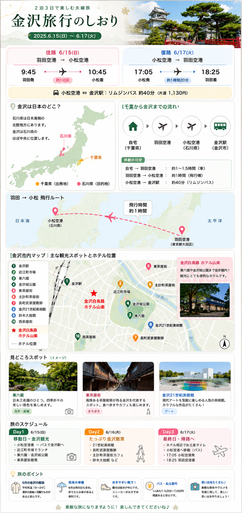

千葉県 → 羽田空港 → 小松空港 → 金沢市
金沢市は石川県の県庁所在地で、日本海側の「北陸地方」にあります。
千葉県 ↓ 羽田空港 ↓ ✈ 約1時間 小松空港 ↓ 🚌 約40分 金沢市
東茶屋街
●
│
近江町市場
●
│
金沢駅 ●────● ホテル山楽
│
兼六園 ●─● 金沢城
│
21世紀美術館
│
長町武家屋敷
│
西茶屋街
金沢到着・東茶屋街と近江町
6月15日（月）金沢駅の名物・鼓門（つづみもん）でまず一枚。巨大な木製アーチが出迎えてくれます。荷物はホテルへ預けてからスタート。
「金沢の台所」で日本海の海鮮を堪能。ノドグロや甘エビの海鮮丼、カニが名物。混雑前の11時台がおすすめ。現金も持参を。
江戸時代から続く茶屋の街並み。金箔ソフトクリームや和菓子、伝統工芸品のショッピングが楽しめます。着物レンタルで雰囲気を楽しむのもおすすめ。
東茶屋街から徒歩圏内。浅野川沿いの静かな茶屋街で、より落ち着いた雰囲気が楽しめます。橋の上から眺める景色が特に美しい。
金沢白鳥路 ホテル山楽（兼六園・金沢城まで徒歩すぐ）。温泉大浴場でひと息ついてからディナーへ。
ホテルから徒歩圏内の繁華街。加賀料理（治部煮など）の居酒屋や、新鮮な海鮮を出す寿司店が豊富。予約推奨。
兼六園・金沢城・長町武家屋敷と21美
6月16日（火）☀️ 6月のメモ：梅雨の時期ですが、兼六園は雨の日でも緑が美しく幻想的です。折りたたみ傘を忘れずに。兼六園は朝7時から開園。早朝が空いていておすすめです。
朝食付きプランをゆっくり楽しんでから出発。
日本三名園のひとつ。6月は花菖蒲や紫陽花が見頃。霞ヶ池、ことじ灯籠など写真映えスポットが多数。ホテルから徒歩約5分。
兼六園に隣接。白い鉛瓦の城壁が美しい。石川門や菱櫓などを見学。再建工事が進んでいますが十分見応えあり。
土塀と石畳の武家屋敷が残る静かなエリア。野村家などの武家屋敷を見学できます。江戸時代の空気が残る風情ある街並み。
長町周辺のカフェやレストランで昼食。金沢カレーや能登丼、加賀野菜を使ったランチも人気。
現代アートの聖地。無料ゾーンだけでも十分楽しめます。名作「スイミング・プール」（レアンドロ・エルリッヒ）は要事前予約。月曜休館のため火曜は通常通り開館。
ホテル山楽の温泉大浴場で旅の疲れを癒やします。
金沢ならではの加賀料理（治部煮、じぶ鍋）や地元の鮨屋でディナー。予算に応じてカウンター鮨もおすすめ。前日とは違うエリアやジャンルを試してみては。
西茶屋街・鈴木大拙館・帰路
6月17日（水）ゆっくり朝食。荷物はフロントに預けてから最終観光へ出発。
禅の思想家・鈴木大拙を記念した美術館。水鏡に映る建築が圧巻の静謐な空間。訪れた多くの人が「人生で最も平和な場所」と称します。月曜休館・火曜は通常開館。
東茶屋街より小ぶりで静かな茶屋街。観光客が少なく落ち着いた雰囲気。近くに寺町エリアもあり、寺院が点在する風景が楽しめます。
金沢最後の食事。近江町市場か、金沢駅構内の「百番街」でお土産兼ねて海鮮丼やお弁当も。
金沢駅「あんと」「百番街」でお土産を。金箔関連商品、加賀棒茶、福梅（和菓子）、ルビーロマンぶどうジャムなどが人気。
金沢駅から小松空港へ移動し、飛行機で羽田空港へ。
旅のメモ・移動情報
🚌 市内移動について
レンタカーなしでも主要観光地はバスで回れます。
城下まち金沢周遊バス（1日乗り放題600円）が便利。
東茶屋街・兼六園・武家屋敷・21美など主要スポットをカバー。
ホテル〜兼六園・金沢城は徒歩5分圏内と絶好のロケーション。
🏨 ホテル情報
金沢白鳥路 ホテル山楽
住所：石川県金沢市丸の内6-3
TEL：076-216-7878
✓ 兼六園・金沢城まで徒歩約5分
✓ 温泉大浴場あり（朝風呂可）
✓ 朝食付き2泊
🌧️ 6月の金沢（梅雨）について
6月は梅雨時期です。折りたたみ傘は必須。ただし金沢の雨は情緒があり、庭園や茶屋街はしっとりした美しさが楽しめます。
花菖蒲（兼六園）・紫陽花が見頃の季節。気温は20〜25℃程度で過ごしやすいです。
🍽️ グルメメモ
食べたいもの：ノドグロ（のど黒）、甘エビ、加能ガニ（時期外だがカニ料理あり）、治部煮、金沢おでん、金箔スイーツ、ひゃくまんさんグッズ
おすすめ：近江町市場の朝海鮮・昼海鮮丼。人気店は整理券が出ることも。11時前に行くのが吉。
注意：市場の一部店舗は現金のみ。